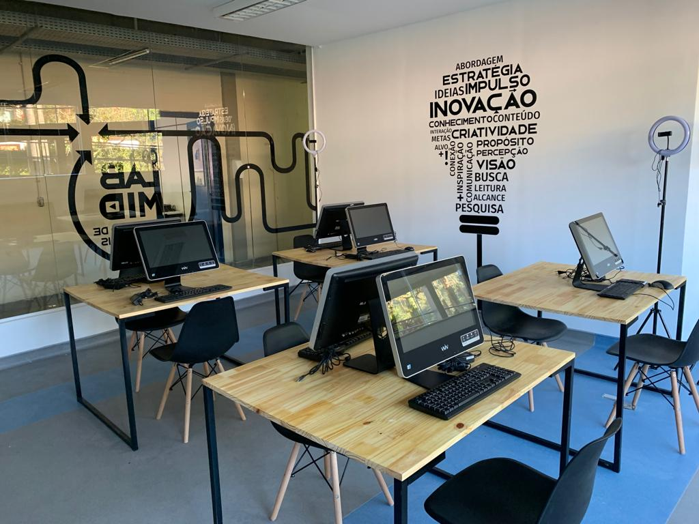
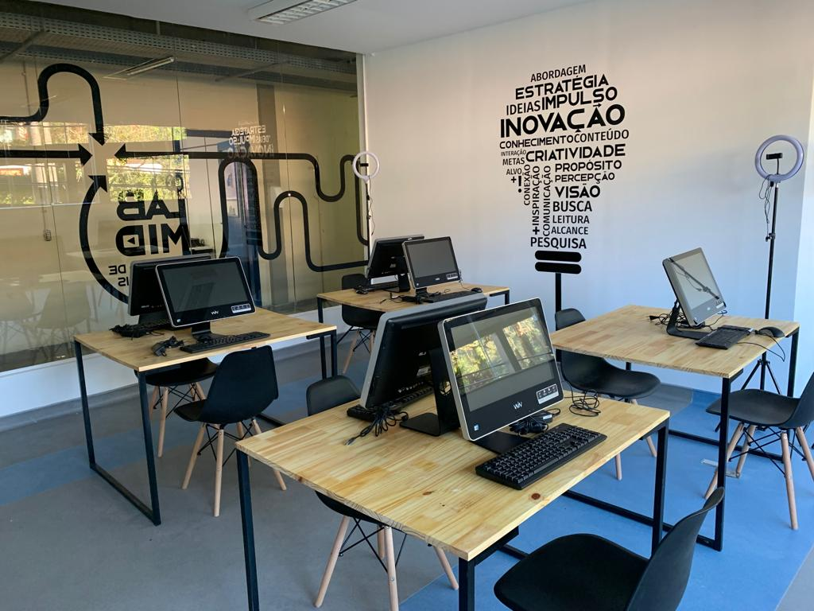

É uma graduação de nível superior, modalidade tecnólogo, com duração de 2 anos e meio (5 períodos), totalmente gratuita e com diploma reconhecido pelo MEC.
O curso prepara o aluno para trabalhar com:
A FAETERJ Petrópolis oferece 23 vagas para o período da manhã e 23 para o noturno, totalizando 46 vagas distribuídas entre os dois turnos.
Av. Getúlio Vargas, 335 – Quitandinha, Petrópolis – RJ.
O bairro Quitandinha é um polo tecnológico, congregando o LNCC e empresas de TI — ótimo ambiente para networking.
Ingresso via SISU, com base nas notas do ENEM.
Em 2024, a nota de corte variou entre 640,90 e 660,54 pontos.
Estimativa média 658 pontos.
Carga horária total de 2.920 horas, distribuídas ao longo de 3 anos, incluindo estágio supervisionado e TCC.
Disciplinas incluem: Inglês Técnico, Matemática Discreta, Programação em C, Banco de Dados, Redes de Computadores, Sistemas Operacionais, Segurança da Informação, Computação Gráfica, Comércio Eletrônico, Empreendedorismo, Legislação em Informática, entre outras.
A instituição oferece ensino, pesquisa e extensão com laboratórios modernos e ações que conectam a comunidade local à instituição.
A FAETERJ é pública, vinculada à FAETEC e à SECTI, com foco em cursos tecnólogos de curta duração, voltados ao mercado.
O Trabalho de Conclusão de Curso é um componente curricular obrigatório e complementar do processo ensino aprendizagem do currículo do curso de Formação em Tecnologia da Informação e da Comunicação, definido e caracterizado como elaboração e formulação de um produto final de demonstração da capacidade e da competência do formando, razão de seu caráter individual. São admitidos como modalidades de TCC: monografias teóricas, trabalhos técnicos, protótipos, ensaios tecnológicos e artigos científicos, desde que vinculados a uma das linhas de pesquisa institucionais.
Leia o Regulamento completo e acesse os documentos pertinentes.
Professor responsável: Amarildo Micoski Luz.
Guia com instruções para elaboração do TCC (PDF).
Guia com instruções para elaboração do TCC (PDF).
Guia com instruções para elaboração do TCC (PDF).
Guia com instruções para elaboração do TCC (PDF).
Guia com instruções para elaboração do TCC (PDF).
Guia com instruções para elaboração do TCC (PDF).
Para solicitações, entre em contato pelo e-mail institucional: seacad@faeterj-petropolis.edu.br
Não precisam de assinaturas à tinta, são enviados com assinatura digitalizada e serão enviados pelo e-mail institucional.
Prazo de 7 dias úteis. Horário para retirada: 8h às 19h.